NextLock 1.0.1
Customize Lock Screen time and date fonts, colors, size, position and shadows, then add built-in icons or transparent sticker-style custom photos.
Read guide and downloadFind original releases, source-checked package summaries, useful roundups, complete tutorials, and rootless setup information—with direct links to original sources.
Detailed feature notes, compatibility guidance, and downloads for packages created and maintained by Next Jailbreak.
Customize Lock Screen time and date fonts, colors, size, position and shadows, then add built-in icons or transparent sticker-style custom photos.
Read guide and download
Double-tap empty Home Screen space to lock your iPhone. Version 1.0.5 keeps the physically verified SpringBoard method and one clean enable switch.
Read guide and download
Redesign Favorites, Recents, Contacts, and Keypad with fixed saved-number suggestions, smart call filters, and the 0.4.16 stability rollback.
Read guide and downloadClear feature explanations, real interface screenshots, compatibility notes, and direct links to the original package sources.

Compare layout editors, folder upgrades, dock tools, widget cleanup, and quick actions using 16 real feature screenshots and current source notes.
See all 8 tweaks →
CatScript Lite 1.5.5 iOS jailbreak tweak: verified features, compatibility, requirements and release details from the original developer source.
Read guide →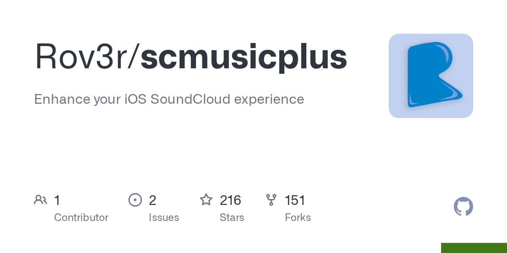
SCMusicPlus 24.9.1 iOS jailbreak tweak: verified features, compatibility, requirements and release details from the original developer source.
Read guide →Cercube for YouTube 6.1.3 iOS jailbreak tweak: verified features, compatibility, requirements and release details from the original developer source.
Read guide →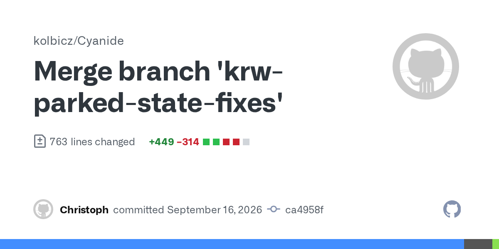
Cyanide 1.6.0 iOS jailbreak tweak: verified features, compatibility, requirements and release details from the original developer source.
Read guide →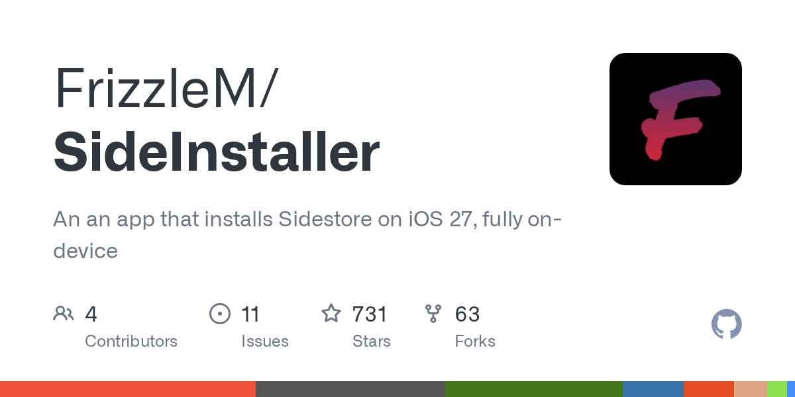
SideInstaller 1.0.0 iOS jailbreak tweak: verified features, compatibility, requirements and release details from the original developer source.
Read guide →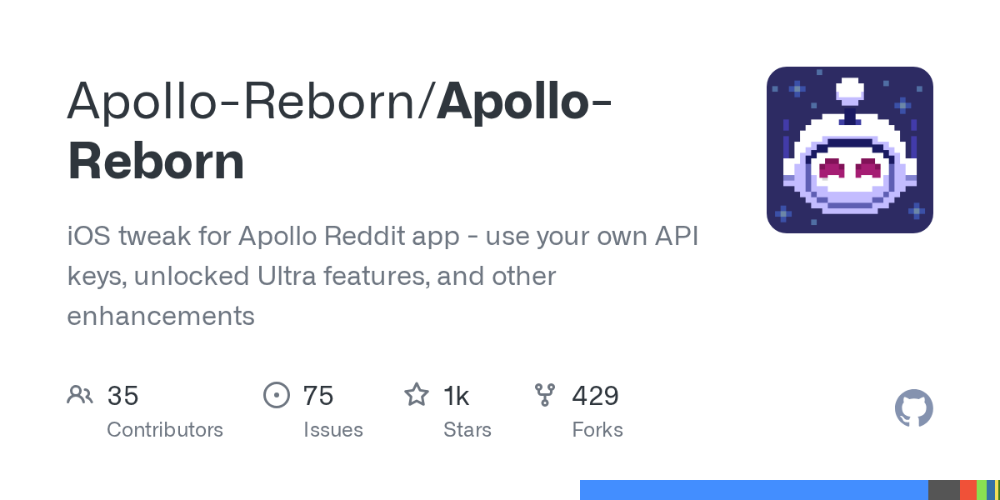
Apollo Reborn 3.7.1 iOS jailbreak tweak: verified features, compatibility, requirements and release details from the original developer source.
Read guide →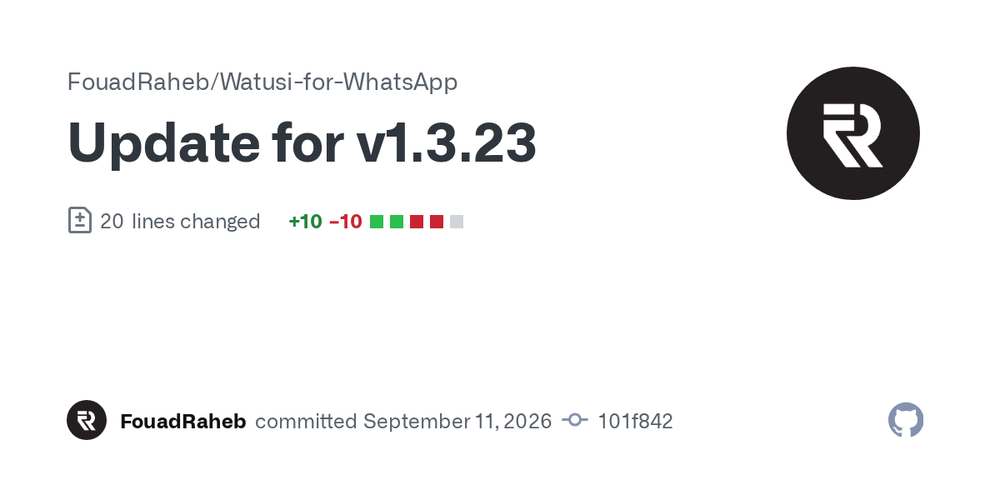
Watusi 3 1.3.24 iOS jailbreak tweak: verified features, compatibility, requirements and release details from the original developer source.
Read guide →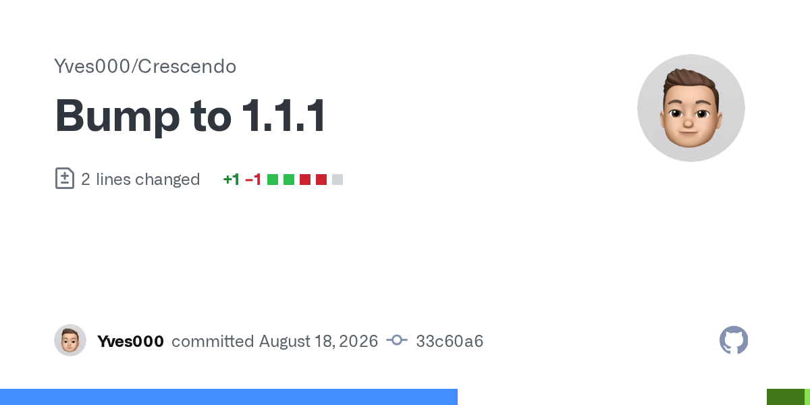
Crescendo 1.1.1 iOS jailbreak tweak: verified features, compatibility, requirements and release details from the original developer source.
Read guide →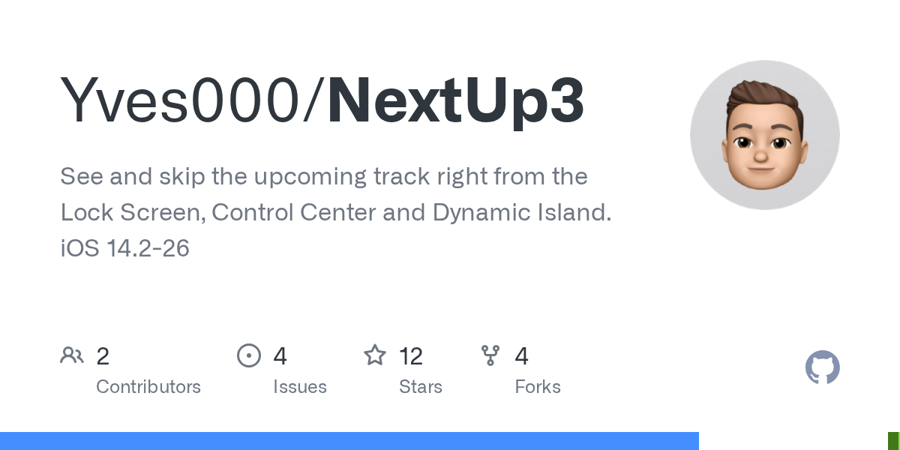
NextUp 3 1.2 iOS jailbreak tweak: verified features, compatibility, requirements and release details from the original developer source.
Read guide →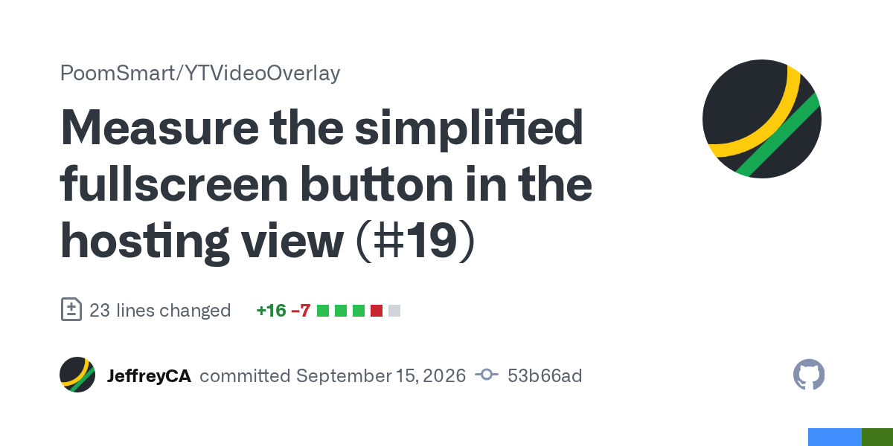
YTVideoOverlay 2.3.8 iOS jailbreak tweak: verified features, compatibility, requirements and release details from the original developer source.
Read guide →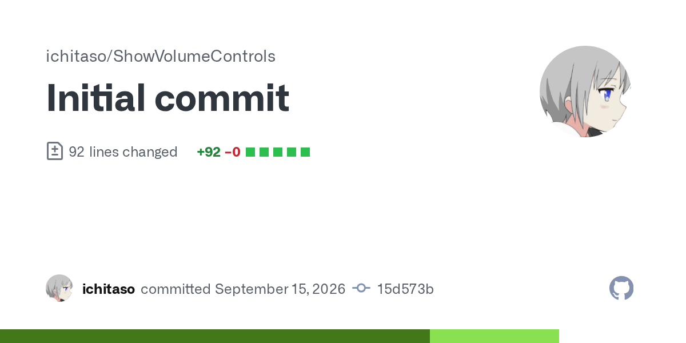
ShowVolumeControl 1.0.0 iOS jailbreak tweak: verified features, compatibility, requirements and release details from the original developer source.
Read guide →Rocket for Instagram 4.18.0 iOS jailbreak tweak: verified features, compatibility, requirements and release details from the original developer source.
Read guide →
Nations 1.0 iOS jailbreak tweak: verified features, compatibility, requirements and release details from the original developer source.
Read guide →vphone-cli now supports iOS 27 RC build 24A435 and a jailbroken virtual-iPhone mode with Sileo and TrollStore on Apple Silicon Macs. Here is what it means.
Read guide →iOS 27 shipped with more than 120 security fixes. Here is what the kernel and root bugs plus the usbliter8 iPhone 11 Pro beta jailbreak demo mean for jailbreak users.
Read guide →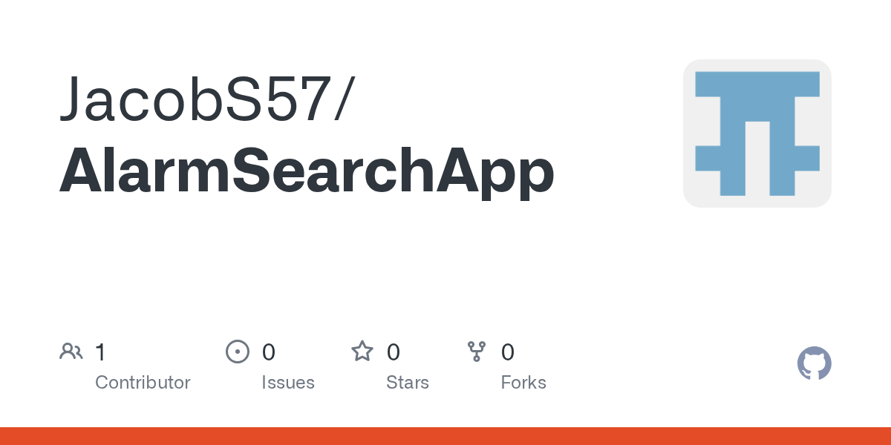
AlarmSearch 1.0 iOS jailbreak tweak: verified features, compatibility, requirements and release details from the original developer source.
Read guide →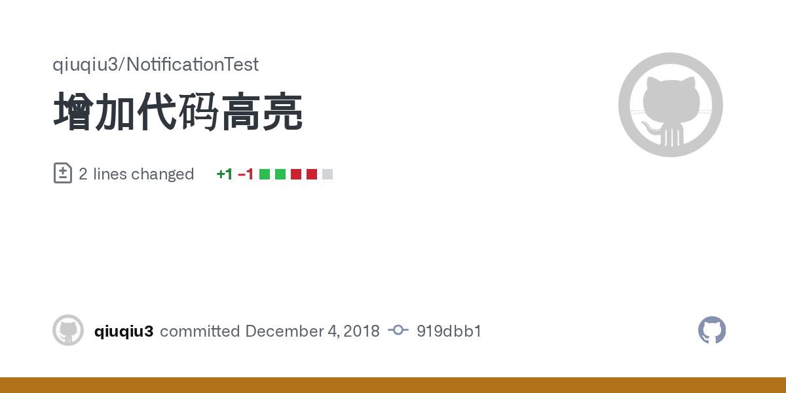
NotificationTest 0.0.2 iOS jailbreak tweak: verified features, compatibility, requirements and release details from the original developer source.
Read guide →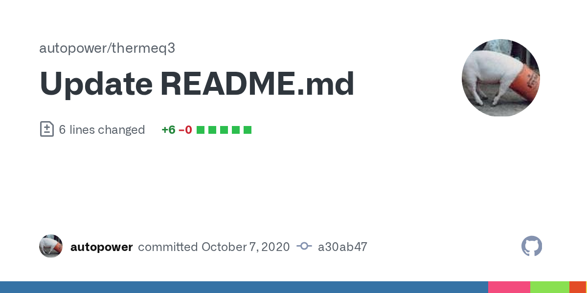
AutoPower 1.3.0 iOS jailbreak tweak: verified features, compatibility, requirements and release details from the original developer source.
Read guide →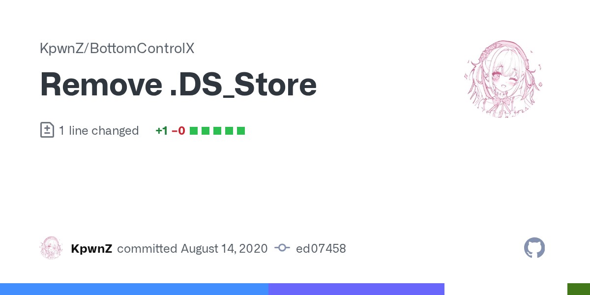
BottomControlX 1.0.1 iOS jailbreak tweak: verified features, compatibility, requirements and release details from the original developer source.
Read guide →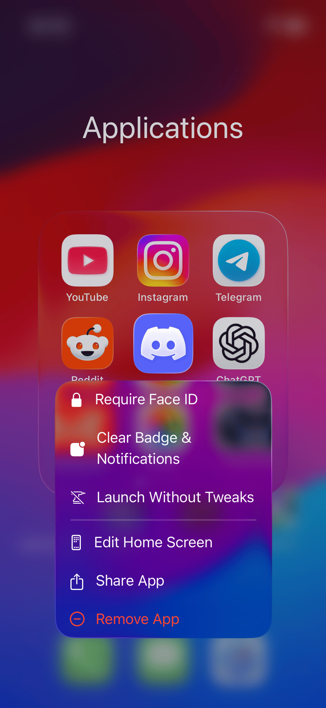
AppBadgeClear 1.1.1 iOS jailbreak tweak: verified features, compatibility, requirements and release details from the original developer source.
Read guide →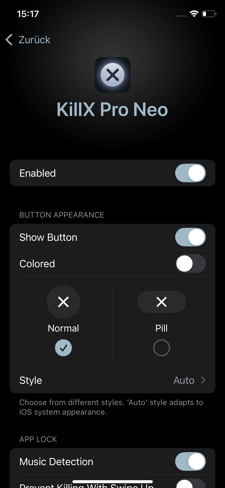
KillX Pro Neo 3.0 iOS jailbreak tweak: verified features, compatibility, requirements and release details from the original developer source.
Read guide →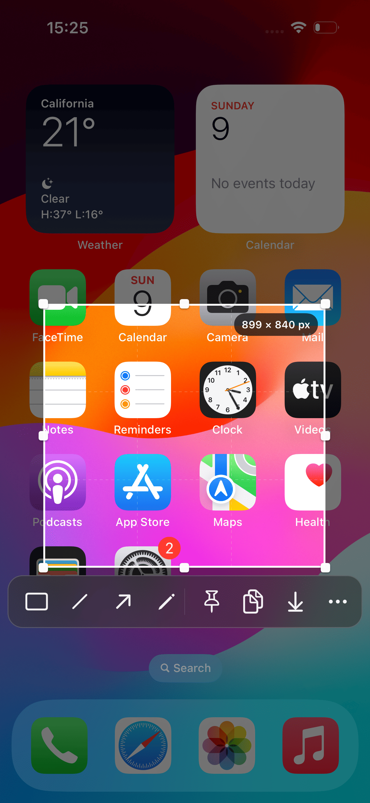
Prism 1.0.0-2 iOS jailbreak tweak: verified features, compatibility, requirements and release details from the original developer source.
Read guide →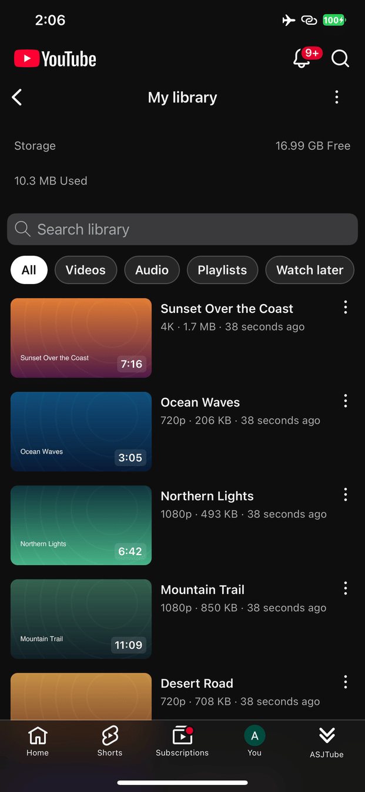
ASJTube 1.2.1 iOS jailbreak tweak: verified features, compatibility, requirements and release details from the original developer source.
Read guide →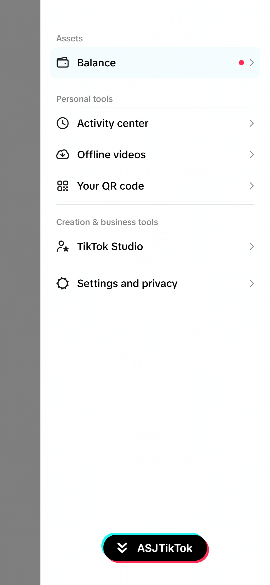
ASJTikTok 1.2 iOS jailbreak tweak: verified features, compatibility, requirements and release details from the original developer source.
Read guide →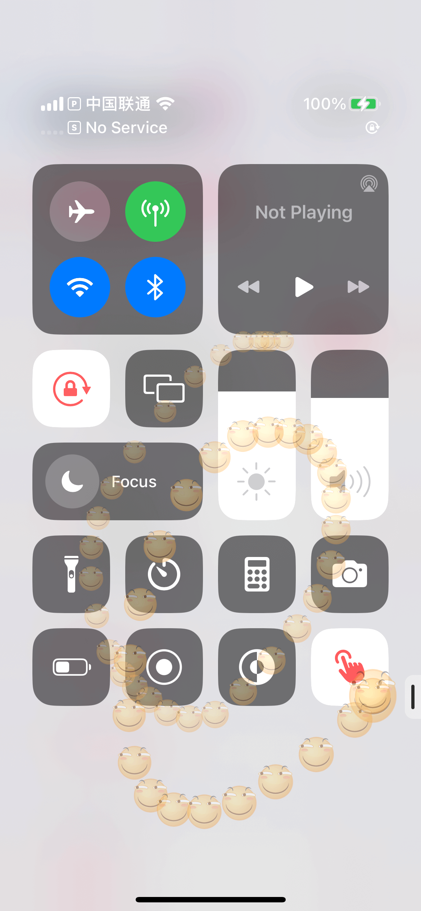
Touch-Viz 2.4 iOS jailbreak tweak: verified features, compatibility, requirements and release details from the original developer source.
Read guide →Adytum 1.0 iOS jailbreak tweak: verified features, compatibility, requirements and release details from the original developer source.
Read guide →
Rena 1.0.1 iOS jailbreak tweak: verified features, compatibility, requirements and release details from the original developer source.
Read guide →
Uptime 1.0.1 iOS jailbreak tweak: verified features, compatibility, requirements and release details from the original developer source.
Read guide →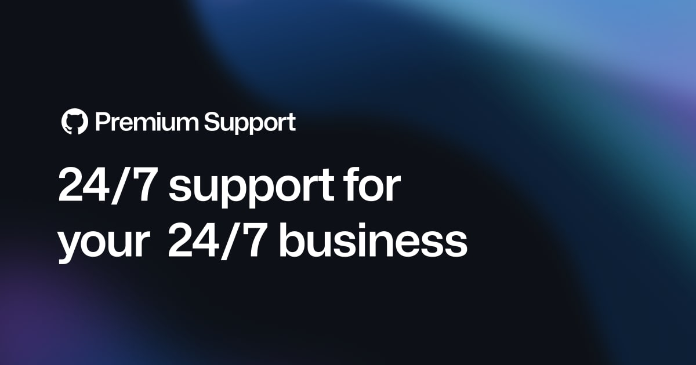
Watusi 3 for WhatsApp 1.3.23 iOS jailbreak tweak: verified features, compatibility, requirements and release details from the original developer source.
Read guide →
HALO2 1.0 iOS jailbreak tweak: verified features, compatibility, requirements and release details from the original developer source.
Read guide →Long-form instructions for preparation, setup, package conversion, and troubleshooting.

Jailbreak supported A12, A12X, A12Z and A13 devices with official downloads, Sileo setup, troubleshooting, and a real Next Jailbreak iPad result.
Read the complete guideFollow the palera1n process with device requirements, preparation, installation, and troubleshooting.
Read tutorial →Browse a categorized collection of useful rootless packages with repositories and installation information.
View the collection →Understand package layouts and convert older packages for modern rootless environments.
Open conversion guide →Explore the customization areas covered by Lynx 2 and the compatibility points worth checking.
Read the review →Pair the written instructions with original videos from the official channel.